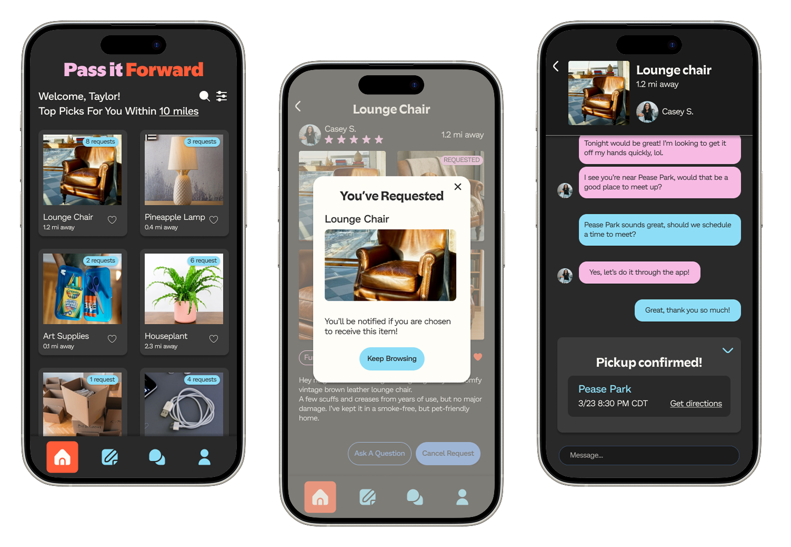
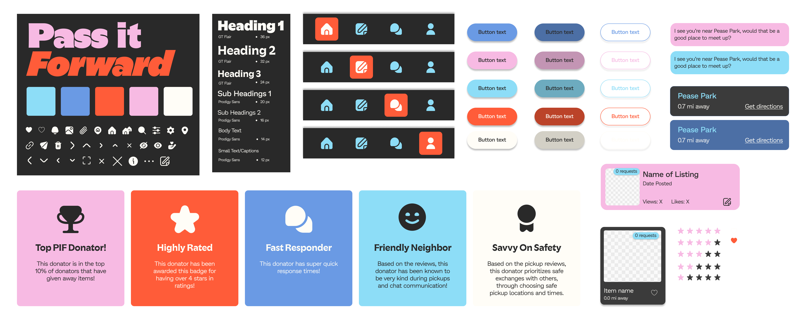

Pass it Forward
A community-based, safety-forward “buy nothing” app.
Timeline: February – April 2025 (3 months)
People: 5
Role: UX design, UX research, visual design system
The problem
Our team loves to exchange secondhand items with others within our communities. However, most online apps for giving away free items tend to be situated within larger social media experiences, and tend to be rather informal and unstructured as a result.
Our solution
With Pass it Forward, our aim was to create a structured, community based platform for users to exchange secondhand items with their real-life neighbors, fostering positive in-person interactions by promoting both fun and safety.
Features

Verify your profile
Users are prompted to verify their identity and home address upon signup, ensuring that any in-person interactions remain safe, secure, and between neighbors.

Request items with one tap
Browse free item listings from your neighbors, then easily view item details and send requests for items that you are interested in.

Easily arrange item pickup
Arrange item pickup through a step-by-step process to minimize the hassle of going back and forth.

View other users' profiles
See other users' credentials and reviews so that you feel safe completing exchanges with them.
Understanding our market: user interviews and competitive analysis
We conducted preliminary user interviews as well as a competitive analysis to determine areas that we should focus on for our app.
Through our competitive analysis, we determined that there is a space in the market for a structured, community-based app for giving away free items.
Through our user interviews, we determined that the two primary concerns of our potential userbase are safety and reliability, both of which could be addressed through the creation of an app that fills the market niche that we discovered.
How do we ensure safety and reliability?

Our app has several measures for ensuring safety and reliability, in place throughout all steps of the verification and exchange process. I focused on designing the app's chat feature, which includes a scheduling system that makes it easy for users to meet up for item exchange.
The item exchange process:
- The donator accepts an item request from the receiver
- The app provides a list of convenient public locations for meetup
- The app provides a list of time blocks within the next week
- Once the users have both selected locations and times that work for them, the app decides on a location and time that works for both users
- The users meet up at the designated time and place and complete the exchange
- Afterwards, both the donator and receiver are prompted to leave a review for the exchange
Creating our design system
I worked with a partner to create the design system for our app. Through our visual design choices, we hoped to convey a sense of fun and freshness while maintaining accessibility and ease of use.

Changes from user testing
We conducted three rounds of unmoderated user testing through UserTesting.com. After each round, we evaluated our findings and made changes, most of which were in the areas of clarity and ease of use. Here are some of the changes that I ended up making to the chat flow.

Some users found it unclear whether location items were selectable, so I added outlines in order to make this more obvious.

Users thought that scheduled pickup times were not obvious, so I added a clear label for this on the pickup confirmation screen.

Users were confused by the fact that they were prompted to leave a review before they were sure that the exchange was completed, so I added an “Exchange complete” announcement to the review page.
Final Prototype
Ultimately, this was an incredibly rewarding process of designing a wholly original app from start to finish. I learned a lot from my teammates, the users who tested our prototype, and the existing products that we took inspiration from.
If we were to take this project even further in the future, our hope is to expand the features that we offer, adding things like the ability to post requests for items that you are searching for.